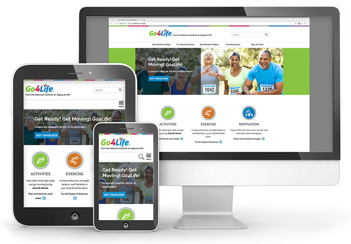
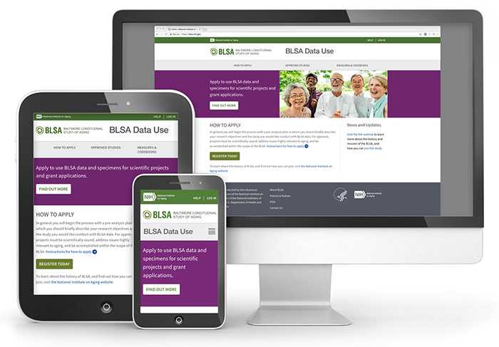
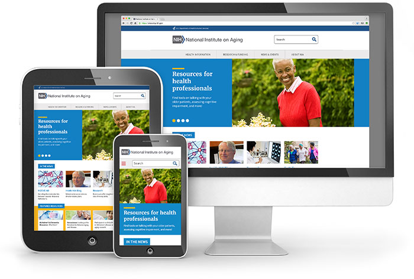

Recent Projects

Managed campaign site redesign and migration from Drupal 7 to Wordpress. Drafted project management documents and guided requirements collection and wireframe designs. Supported WordPress lead, business analyst, lead designer, front-end developer, and back-end developer from kickoff to final site launch. Ran daily standup meetings, provided updates to stakeholders and clients, and facilitated Stage Gate Review with NIH. Planned and facilitated usability testing (tree testing and first click testing), and user acceptance testing.

Managed redesign and migration from Drupal 7 to Drupal 8. Drafted project management documents and guided requirements collection and wireframe designs. Supported business analyst, lead designer, front-end developer, and back-end developer by running daily standup meetings, and communicating with stakeholders and clients. Project utilized Twitter Bootstrap, atomic design, and rapid prototyping.

Technical lead on redesign and migration from Drupal 7 to Drupal 8. Served as technical lead and provided hands-on support for content modeling, site building, and theming. Provided strategic guidance on a leaner and more agile design and development process that leveraged U.S. Web design standards, atomic design, rapid prototyping, and a living style guide. Supported project manager, lead designer, front-end developer, and back-end developers.